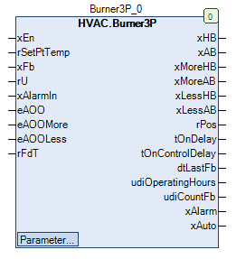

Burner3P (FB)¶
FUNCTION_BLOCK Burner3P
Short Description¶
Control of a heat producer ( temperature control via binary control commands More / Less )Typical application: heat production
Portrayal¶

Functional Description¶
General¶
Enabling / disabling of the heat producer¶
Temperature control of the heat producer¶
Manual override of the digital outputs¶
xAB eMANBIN xHB Notes
FALSE eMANBIN.Auto FALSE Manual override module in automatic mode
TRUE eMANBIN.Auto TRUE Manual override module in automatic mode
X eMANBIN.ManOn TRUE Manual override module in manual mode On
X eMANBIN.ManOff FALSE Manual override module in manual mode Off
xAlarm collective alarm¶
Collective alarm message automatic mode xAuto¶
Operating hours counter - heat producer¶
Write access to the counter readings
Prerequisite for using the Burner3P function block
Current calculated power of the heat generator rPos¶
Recirculation of the heat producer output rU¶
Inactive state ( xEn = FALSE )¶
xHB xAB xMoreHB xMoreAB xLessHB xLessAB rPos tOnDelay tOnControlDelay dtLastFb udiOperatingHours udiCountFb xAlarm xAuto Notes
FALSE ( eManModeB = eManBin.Auto ) FALSE FALSE ( eManModeBMore = eManBin.Auto ) FALSE FALSE ( eManModeBLess = eManBin.Auto ) FALSE 0.0 % old value
old value
old value
old value
old value
State of xAlarmIn
old value
xEn = FALSE
Visualization¶
Codesys¶
- InOut:
Scope Name Type Initial Comment Input xEn BOOL Request of the heat producer ( FALSE = Off, TRUE = On )
rSetPtTemp REAL Flow set temperature in °C
xFb BOOL Operating feedback of the heat producer ( FALSE = Off, TRUE = On )
rU REAL 0 Recirculation of the heat producer output rU
xAlarmIn BOOL Fault message of the heat producer ( FALSE = Off, TRUE = On )
eAOO eManBin HVACTYPES.eManBin.Auto Operating mode of the manual override - Hardware for the output xHB
eAOOMore eManBin HVACTYPES.eManBin.Auto Operating mode of the manual override - Hardware for the output xMoreHB
eAOOLess eManBin HVACTYPES.eManBin.Auto Operating mode of manual override - Hardware for the output xLessHB
rFdT REAL Flow set temperature in °C
Output xHB BOOL Enable - Heat producer after manual override ( FALSE = Off, TRUE = On )
xAB BOOL Enable - Heat producer before manual override ( FALSE = Off, TRUE = On )
xMoreHB BOOL Enable - Power increase after manual override ( FALSE = Off, TRUE = On )
xMoreAB BOOL Enable - Power increase before manual override ( FALSE = Off, TRUE = On )
xLessHB BOOL Enable - Power reduction after manual override ( FALSE = Off, TRUE = On )
xLessAB BOOL Enable - Power reduction before manual override ( FALSE = Off, TRUE = On )
rPos REAL Current calculated output of the heat producer in %.
tOnDelay TIME Waiting time until the end of the minimum idle time in s
tOnControlDelay TIME Waiting time until start of temperature control in s
dtLastFb DT Date / time of the last operation of the heat producer
udiOperatingHours UDINT Operating hours of the heat producer in h
udiCountFb UDINT Number of starts of the heat producer
xAlarm BOOL Collective fault message ( FALSE = Off, TRUE = On )
xAuto BOOL Automatic message ( FALSE = Off, TRUE = On )
Input tDuration TIME TIME#1m0s0ms Running time of the drive between minimum and maximum power in s
tIntegration TIME TIME#100ms Duration between two integration processes in s
tImpulsClose TIME TIME#1s0ms Duration of a impulse at the output xLessAB in s
tImpulsOpen TIME TIME#1s0ms Duration of a impulse at the output xMoreAB in s
rKpTiny REAL 0.8 Gain factor of the slow power controller
rKpBig REAL 8 Amplification factor of the fast power controller
rOffset REAL 0 Temperature offset - Flow set point temperature for the power controllers in °C
rYDisabled REAL 0 Switch-off value of the power controllers ( xEn = FALSE )
udiWaitControl UDINT 3 Waiting time until the power controllers are enabled ( xFB = TRUE ) in minutes
rSwitchOffPoint REAL 2.5 Switch-off point relative to flow set point temperature rSetPtTemp in °C
rSwitchOnPoint REAL -2.5 Switch-on point relative to flow set point temperature rSetPtTemp in °C
udiTimeMinOff UDINT 3 Minimum idle time of the heat producer in s
eManModeBLess eMANBIN eMANBIN.Auto Operating mode of manual override for the digital output xLessHB
eManModeBMore eMANBIN eMANBIN.Auto Operating mode of the manual override for the digital output xMoreHB
eManModeB eMANBIN eMANBIN.Auto Operating mode of manual override for the xHB digital output